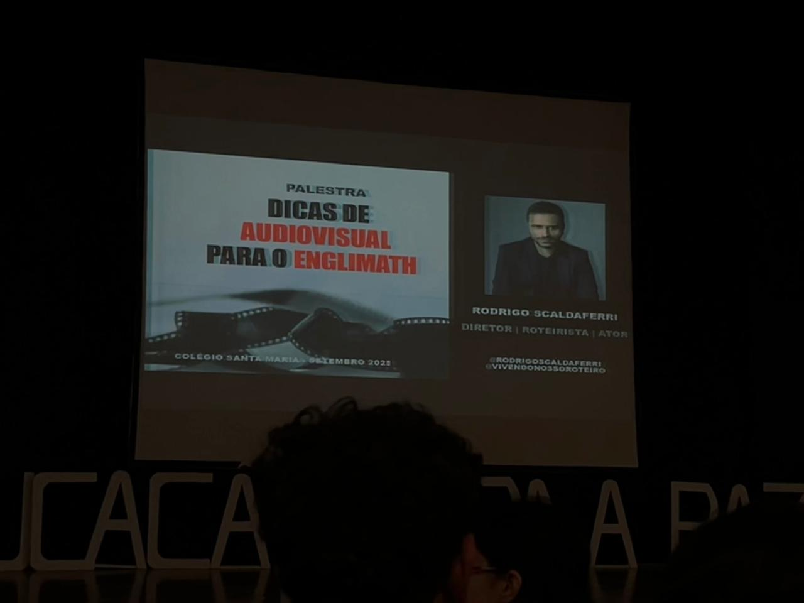
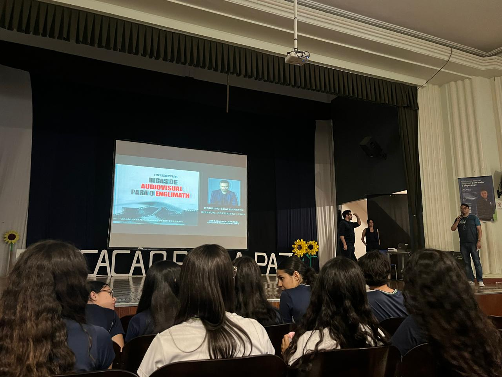
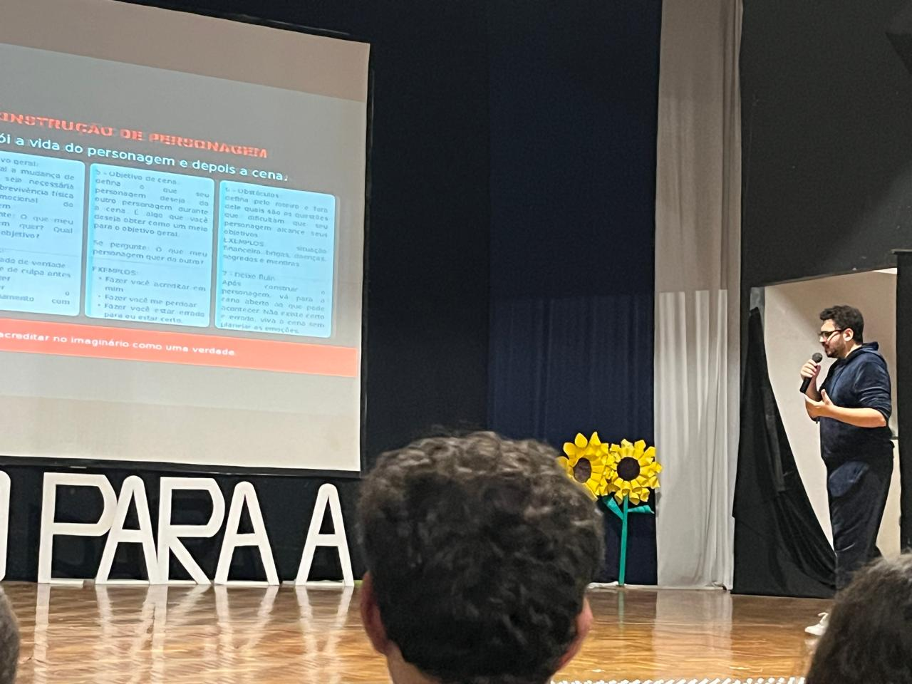
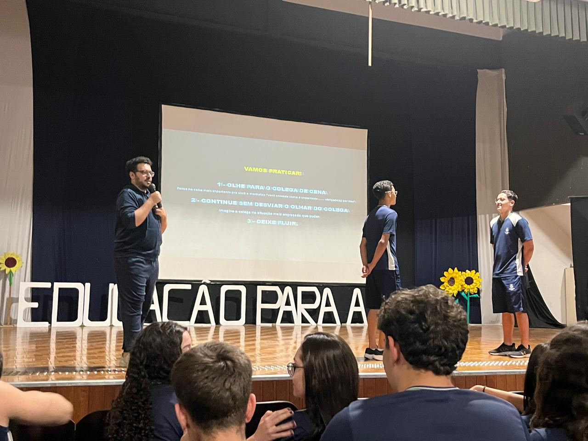
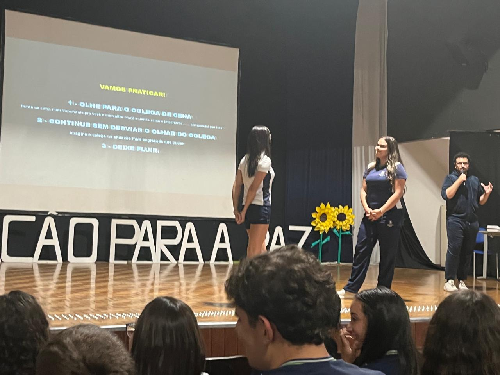
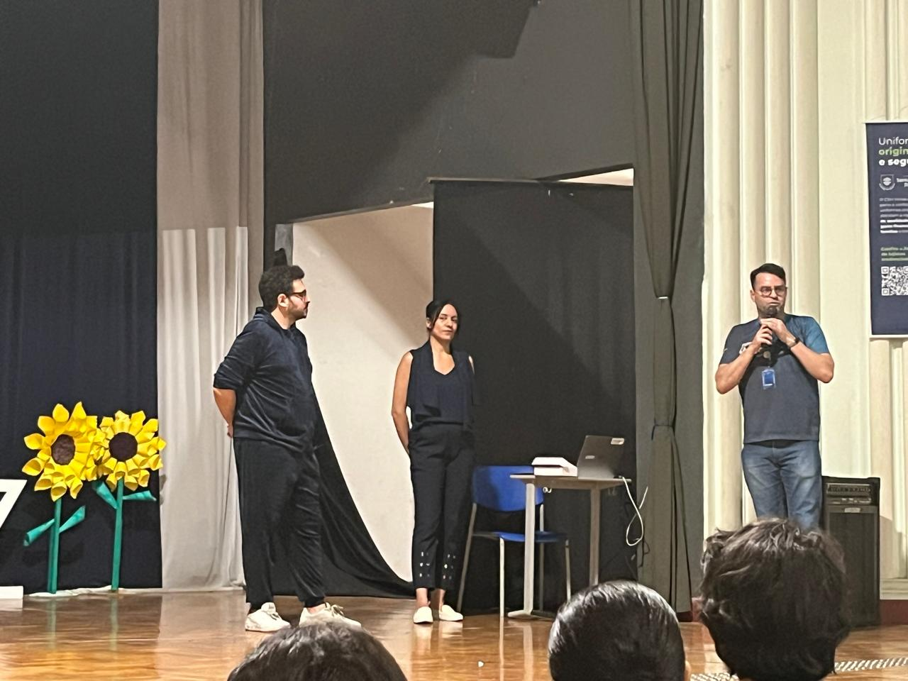

Oficinas do Projeto
Oficina de criacao de roteiro e abertura do englimath
Foram convidados alunos do terceiro ano, para contar um pouco sobre como foram as gravações do englimath 2024. Alem disso, tivemos momentos de criacao de roteiro e dublagem, onde dublamos um curta da disney e também aprendemos a como escrever um roteiro em formato de escaleta
Oficina de Atuação e Direção






Oficina de Atuação, foram convidados 2 atores, Fernanda Laborde e Rodrigo Scaldaferri para tirar duvidas e auxiliar com informações sobre angulo de câmera dicas de atuação e etc, focando no desenvolvimento das habilidades cênicas dos alunos.